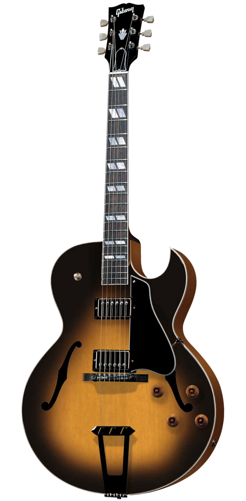

The term jazz guitar may refer to either a type of guitar or to the variety of guitar playing styles used in the various genres which are commonly termed "jazz". The jazz-type guitar was born as a result of using electric amplification to increase the volume of conventional acoustic guitars.
Conceived in the early 1930s, the electric guitar became a necessity as jazz musicians sought to amplify their sound to be heard over loud big bands. When guitarists in big bands only had acoustic guitars, all they could do was play chords; they could not play solos because the acoustic guitar is not a loud instrument. Once guitarists switched from acoustic guitar to electric guitar and began using guitar amplifiers, it made the guitar much easier to hear, which enabled guitarists to play guitar solos.